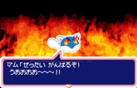
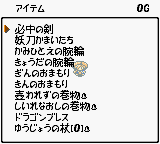

|

2003年12月25日
◆就在平安夜更新了，风来之西林GB2『上级者秘传心法』补完篇已完全放出。还放上了偶做的一张壁纸，这些制作壁纸的素材也比较难找……最后祝大家圣诞快乐！
2003年12月12日
◆放上了偶自己做的几张外传的壁纸，1024X768的分辨率，就当作给大家的圣诞礼物第1弹吧。由于水平有限，做得不太好，请各位多多包涵。不过那些风来素材真的不太好找啊，可恶的CHUNSOFT，官网上的壁纸要钱才能下，再次874孤寒的中村光一1万遍啊1万遍！
2003年12月6日
◆更新了月影村怪物GB的秘传心法，“隐藏迷宫”供养g55F到达方法首次公开！嘿嘿，自己再玩一遍之后，又一次感受到小榉对西林的暗恋是多么的深……可惜PC版无法破除注册的限制，怒MAX！
2003年11月22日
◆更新了『风来周边』以及风来外传的“秘传心法”。新论坛还缺乏人气，希望大家多多发言，不要一直做水怪啊……
◆极品飞车UG画面果然强，所有特效全开之后一个字――爽！
2003年11月17日
◆S1的风来之西林版块已经开通，偶也考上了斑竹之位，以后的重心就是那儿了，相信这是论坛的最后一次搬家了……
2003年11月16日
◆更新了『风来周边』，都是与风来西林有关的一些产品，可惜国内是很难出现的……
◆不知大家的“风来人资格认证测试题”做得怎样，只要做对前19题（最后1题是送的，对不对都无所谓），就能得到进入“禁断领域”的提示，这是比“风来圣域”还要难进的哦，迄今为止，只有寥寥可数的几个人成功了，里面的东西可是高度机密而且非常有价值的哦～～～*^_^*，by
the way，这份测试题不是这么难做吧？
2003年11月12日
◆原来的论坛因为“黑客帝国3”的降临而崩溃了，不过大家不用担心，我已找到新的BBS了，万分感谢GBA-ONLY网站友情提供论坛。
◆CHUNSOFT建社20周年纪念作品竟然没有1作是风来正统续作，真是令人大跌眼镜……GC版的新作似乎是完全原创的RPG，画面还可以，这是CHUNSOFT继参与“勇者斗恶龙”制作之后首个自主制作的RPG游戏。可见CHUNSOFT已经不满足于制作“不思议迷宫系列”和电子小说系列这2种类型的游戏，而努力向其他类型游戏发展，以改变玩家对公司的传统看法。虽然CHUNSOFT的这种创新精神很令人钦佩，但我闭上眼睛想了想，还是对这个GC版的RPG一脚踢飞！那么剩下的只有另类的风来体育游戏了，贴几张游戏画面默哀一下……
|
|
|  |
 |
2003年11月11日
◆再次更新了风来外传的ムラドの试练图文攻略，其实我制作的这篇攻略没什么看头，基本上跟日文西林站点的公版攻略差不多，只不过配上了截图而已，图片较多，养猫的同志请慎入！不过，40F的“落物位置定律”和50F的“毒箭方向定律”推荐大家一看，是对突破カカ・ル`の试练50F很有帮助的技巧。
2003年11月1日
◆更新了风来外传的ムラドの试练图文攻略和秘传心法。
◆相信大家对CHUNSOFT的GBA新作都很失望吧，其实，在未公开FLASH预告动画之前，CHUNSOFT已经透露了一个关键词“スポ`ツ”，目的是告诉大家这仅是一个与体育运动相关的游戏而已，而那个FLASH只不过更深一步透露游戏中会采用风来中的怪物，估计这个另类的风来游戏只是GC版的连动陪衬而已……唉，西林GB3真是遥遥无期呐……
2003年10月18日
◆更新了西林GB2的怪物手帐，此图鉴的制作得到“如冰非冰”网友的鼎力支持，万分感谢。
◆CHUNSOFT建社20周年制作的3个游戏新作，除了PS2那个作品可以一脚踢飞，其他2个都是极品中的极品，而这些新作的情报也都逐渐发布。相信大家都很关心28日公开的GBA新作预告，毫无疑问，这铁定就是西林GB3了，不过估计发布的仅是一个模糊抽象的FLASH预告动画，大家在动画中绝对看不出是与西林有关的，因为“CHUNSOFT建社20周年游戏新作竞猜活动”截至11月中旬结束，现在公开的都仅仅是提示，不会很直接地让大家知道游戏名称和内容。只有等到11月下旬之后，CHUNSOFT才会让这些新作以真面目见人并不断公开游戏开发画面。不管怎么说，想买Z版西林GB3的玩家还是先把RMB准备好吧！Yeah！
2003年10月12日
◆放上了风来之西林2的游戏开发者访谈，各位不妨看看，通过这个访谈大家可以看出CHUNSOFT的游戏设计者为了提升游戏性而考虑到的细节部分是很多的。由此相信CHUNSOFT“十年磨一剑”的白金大作“风来之西林GB3”以及“风来之西林3”（RPG型？）绝对会不负众望，估计最早11月份最迟也就圣诞前应该会有GB3的画面公布了，大家拭嘴以待吧！
2003年10月7日
◆在西林GB2的超罕贵道具一览放上了友情之杖的使用心得，更新了西林SFC「秘密写真馆」的“面白写真”。
2003年10月4日
◆月影村怪物全道具补完，更新了西林N64版的土偶一览、建城材料一览和西林城饰物一览。
2003年10月2日
◆更新了西林GB2的超罕贵道具一览和超绝密写真。由于时间的关系，友情之杖的使用心得还未完成，需要说明的是“NPC怪物系统”存在着巨多的BUG，还未彻底完善，不然CHUNSOFT的开发者也不会将友情之杖这个道具“屏蔽”了，所以大家在使用时如果有什么意想不到的事情发生，这是很正常的。
◆让大家久等的“西林GB2超罕贵道具友情赠送活动”现已开幕！详情请到论坛查看，不过人气似乎不高哦，看来只有西林GB3才能拯救全球的风来人了……
◆上传了月影村怪物的Win1.01版，网上流传有该版本的破解补丁，不过经我测试是无效的，各位可以下载后自己试一下，看看是不是我人品有问题，若对破解补丁有任何疑问请直接与作者blacko联系。
2003年9月27日
◆自从『上级者秘传心法』之后，我就认为西林GB2的发掘已经接近极限，除了暂时无人能破解的咒文系统规律，实在没有什么新东西可以研究了。但是，一向有“传世之作”之称的西林系列，只要用心去研究，终究可以发现新东西的！最近，我就发掘出被中村光一“封印”了的众多超罕贵道具。其中，友情之杖、不碎壶之卷物、商品替换之卷物都可以正常发挥效果，而一些罕贵装备更是有实体版的存在（以前大家仅是知道作为合成的特殊能力来出现），这些装备是必中之剑，妖刀镰井达，纸一重之腕轮和强打之腕轮！甚至更有传说中的护身符、银护身符、金护身符、龙佑符等等道具……，以上道具比较有意思的是友情之杖，可以将敌方怪物变为己方NPC来协助战斗，而NPC怪物数更是可以达到……呵呵，所有道具的详细内容请关注下次的更新，包括我原创的“友情之杖使用心得”和NPC怪物军团的绝COOL写真哦！

◆本站将在10.1～10.7期间向大家友情赠送这些罕贵道具，有需要的玩友请密切留意论坛的动态，过时不候！可以说，至少有95%的日本风来人和99%的中国风来人都没有见过友情之杖、不碎壶之卷物、商品替换之卷物这3种道具，更谈不上用过了，最多也仅是听说过而已。所以，请大家切勿错过收藏的机会，特别是玩卡带版的朋友。
◆一年一度的TGS在昨天开幕，今天就可以进去参观了，衷心地希望70599さん能如愿参加TGS，祝福他吧！
2003年9月21日
◆风来试练更新！其实很早就做好风来人资格认证的测试题了，只不过拖到现在才放出来……如果你认为自己对西林系列还是有点了解的，那么就不妨测一下吧，看看你能做对多少？前16题的难度随机排列，后4个试练才是由易至难。如果全对的话，会有意外惊喜哦！(^_^)建议大家不要翻查资料，以自己的实力去测一下，并且最好把第1次的测试结果贴到论坛里。PS：什么也不做就直接交卷的话可以看到原创的称号。迷の领域に到_できた者は……今までlもいない……
2003年9月16日
◆修复了月影村怪物的武器、盾、杖、壶资料一览，并且对风来外传的怪物箱一览中一些罕贵怪物箱的入手方法作了详细补充。
◆应要求放上了背景音乐，永续播放，希望大家喜欢。由于选择了最低音质来压缩，背景的女声听得不是很清了……
◆热心的如冰非冰网友愿意协助我完成西林GB2的全怪物图鉴，谁有这个游戏的全怪物图鉴存档请发到我的邮箱或在论坛放出，鞠躬！我的全怪物图鉴存档很久以前丢失了，现在只有卡带上有了……
2003年9月13日
◆更新了西林N64版的售卖价识别表、印能力一览和F效果一览。更新了月影村怪物的售卖价识别表和冒险事件一览。
◆“风来人资格认证权威试题”即将要完成了，某些题很容易，某些题则比较难，不查找任何资料仅凭记忆和游戏经历而去做这份测试题的话，几乎是不可能全对的。有兴趣的人不妨趁现在先复习一下西林的所有资料，到做题时就得心应手啦！
2003年9月7日
◆由于没有空间的缘故，“风来人绝对领域”消失了3个多月……现在foxj网友为本站提供空间，网站终于得以重开啦！在此特别感谢foxj君，以及为本站新论坛的诞生呕心泣血的SEGA君……还有所有一直支持本站的风来人！感谢你们！！！
◆在网站消失的这段时间，我的电脑坏了好几次，累计时间超过1个月以上，都不知被谁诅咒了，我RP可是很好的呀……这3个月来我几乎没有制作过有关西林的东西，不过网站重开后，我会尽力建设这个网站的，请大家继续捧场吧。
◆风来的资料逐步恢复中，新资料以外传为主，包括一些原创攻略等等。看来我们都估计错误了，“风来之西林GB3”真的要等到明年了，要请愿的去找中村光一吧。以前GB2出的时候刚好是GBC退出历史舞台的时候，那么等GB3发卖的时候估计就是GBA退出历史舞台的时候了。哈哈，PSP与GBA2的对决估计就在明年了。
2003年6月1日
◆我记性不好，今天是什么节日我忘了，不过在此还是祝大家节日快乐！（哇！好多板砖飞过来了，我闪。）
◆补完了西林N64版的道具资料，更新了西林GB2的冒险履历一览和月影村怪物的F效果一览。
2003年5月27日
◆更新了西林GB2的风来人事件及称号、料理人事件及称号、ワナ师事件及称号等资料，对游戏中的这些称号耿耿于怀的人可以看看。
2003年5月22日
◆『风来绝音』开放，主要是为那些想在上网时欣赏西林音乐的人而开设的（特别是在网吧的朋友），包含我收集到的西林各个版本的音乐。此外还放上了西林的OST和作曲家すぎやまこういち的介绍，感兴趣的风来人可以看看。
◆『风来原创动画』开放，制作一个动画很费精力，主要体现在后期处理上，截图倒没什么。希望有高人能投来稿件丰富这个栏目。
2003年5月18日
◆感谢『漫画天城』的刘怒站长友情提供论坛，这个ASP论坛应该比较稳定，就是速度有点慢，那么以后用这个了，各位快去注册啦，虽然我不反对灌水，但大家还是不要灌得太过份的好，此外在风来吧内发有关动漫的帖子也是欢迎的。
2003年5月13日
◆更新了西林SFC的秘传心法，此外再次放上几个音乐相关软件让大家下载。
◆建站至今，风来原创小说和风来原创动画这2个栏目一直无人响应，写小说文笔要求不高，只要读起来通顺而且跟风来有关即可。动画方面不要求一定得自己画出来，相信大多数人都没这个能力，只要截取游戏中的画面作为素材，是亲自制作的就可以了。希望拥有PC的风来人能够制作一些动画来投稿，GIF或FLASH都可以，以完善网站内容。我希望这个站点不仅仅是我一个人在作秀，而是大家都能参与的发挥你特长的舞台。我已经制作了几个SFC版西林的GIF动画，以后更新时会逐渐放上，不会制作GIF动画的可以到〖Emu
Gif Animation〗看看相关教程。最后说明一点，制作的GIF动画要去掉背景，尺寸不能太大（一般选游戏分辨率最小的那个模式来截图），容量也不能太大（建议不超过150KB），现在只接受SFC、N64以及PC版的西林外传这3个版本的动画，GB和GBC版的画面太差，等GBA版出了再考虑。
2003年5月10日
◆在风来秘笈放上了大家期待已久的『风来的西林GB2
～上级者秘传心法～』的主要内容介绍，不过由于我主观意志的影响，这篇研究攻略不打算在网站上放出，想看的话自己想办法吧，对不起了各位。
2003年5月5日
◆也许，因我个人的爱好而放些对大家没有用处的东西是没有意义的，就算做音乐的栏目也打算做与风来有关的，原来的栏目只保留声音软件下载，相信这些软件对大家还是有点用的。这次放上了EAC、LAME、以及Monkey's audio等几个抓音轨、压缩MP3和APE音乐文件的极品软件，也不知大家用什么软件压缩MP3，该不会用解霸金山这些垃圾吧？-_-b
2003年5月3日
◆上次“70599”君的发来的四格漫画由于画面过小，大家都看不清对白，所以这次他发来较大的图片，我把对白翻译了一下，我的日语水平很差，译得不好请大家见谅。
|
|
| ▲好嘞，特制饭团耶！ |
▲已经是奇妙效果的啦，你什么也不用说了！那么，吃吧！ |
|
|
| ▲不是吧……会是奇妙效果的吗…… |
▲看样子……莫非是馊饭团？ |
2003年5月2日
◆新栏目『天籁绝音』开放，主要介绍全球顶尖的各款HI-FI级耳机以及放一些音乐相关软件让大家下载，我知道这个栏目应该不会有太高的人气，对不喜欢耳机的人绝对没有太大帮助，但是了解一下现今世界顶尖的耳机生产力和发展状态，当作增长知识还是很有好处的。今次放上了一篇“怎样才是一副好耳机”的精品文章，可让大家了解到好耳机应具备的东东。
◆5月最强的影片非『黑客帝国2』莫属了，期待中！
2003年4月29日
◆远在日本的风来人“70599”君给我发来E-MAIL，因为使用的是日文内码，经过转换后还是有很多乱码，好在我是高智慧生物，转发到我的日文邮箱，问题解决。大致说叫我代他问候大家，并说他在大阪一间很大的商厦里买了一本西林外传PC版的官方攻略书，1800YEN。还在一间中古店买了把叫「锻えられた木刀」的东东，这个看起来比人还高的状似木棍的东东价值1000YEN，他说由于在中古店里经过众多风来人的接触和交换，已经与它的名字非常相称了（数々のL来人の手で渡した，えられた），不知拿在手上会是什么感觉呢？70599在日本的生活好像很不错的样子。\羡_慕/
|
|
|
| ▲官方攻略书收录的四格漫画，很搞笑的样子…… |
▲官方攻略书的资料非常详细齐全，该有的都有了…… |
▲锻えられた木刀？看起来像木棍。70599居住的环境不错，豪华别墅哦！ |
2003年4月28日
◆更新了西林N64版的杖和壶资料一览，其他资料整理中……
◆“五一”期间将有部分精彩内容放出，敬请关注！（某风来人：“光是卖广告又不放东西有什么用啊？”kenyo：“这个嘛……あっ，今日はいい天荬扦工停 北尘耙粜В亨枥锱纠病纭＃￥＠……啊！！！接着是沉闷的敌方升级声……）
2003年4月26日
◆上传完了西林N64版的ROM，使用了分卷压缩，具体解压方法请看下载页面。
◆新栏目名称定为『天籁绝音』，看名称就知道跟什么有关了吧，但大家肯定猜不中内容的……^_^
2003年4月20日
◆快1个月没更新了，汗！这段时间网站的事我不想多说，期间曾一度有过放弃网站的想法，其实我并非是那种没有毅力的人，不管将来怎样，我都会……把这个网站建设下去，所以请大家继续支持本站！
◆更新了西林外传的秘技书救助咒文和道具救助咒文，更新了西林N64版的杖和壶资料一览。此外放上了lancelot制作的西林外传修改器和记录备份器，期待他再接再厉推出更为完善的版本。
◆杀掉了『kenyo的个人领域』，准备换成新栏目，内容与游戏无关，但大家应该会喜欢的，敬请关注。
◆为了体现圣域的价值，一些精彩内容即将放到圣域中，此外也有特别的精彩内容献给大家，看看右边的预定表，很多好东西接踵而至哦！
◆原来的V2.0论坛老大不想用了，他打算升级到V3.0。这段时间大家暂时用新申请的论坛顶住先，虽然有点烂，实在不行的话大家慢慢等V3.0论坛了，也不知什么时候能放出……
◆西林外传的FTP下载地址为210.34.4.16，帐号movie，不需要密码，要下的赶快。
2003年4月1日
◆那位去日本求学的风来人终于飞抵目的地了，在此祝他旅途愉快、学业有成！
◆据日本某权威网站泄漏的最新情报，风来西林的最新作『风来的西林GB3』开发工作顺调进行中，开发完成度已达70%，CHUNSOFT方面即将在各大传统媒体（如FAMI通）及各大型网站包括官方网站发布游戏的情报以及开发画面，进行一系列宣传工作。看来今年内发售有望了，大家终于可以坐上开往春天的地铁了，期待吧！
◆据日本某权威网站泄漏的最新情报，CHUNSOFT正在进行『风来的西林』的动画化工作，制作总指挥是大家非常熟悉的中村光一（没有意外呀），动画制作方面由一直为西林系列做原画设定工作的长谷川薰主操刀，采用的是写实风格。音乐方面当然由一直给西林系列配乐的伟大作曲家すぎやまこういち来演绎，配音方面据说有业界著名的声优加盟，具体人选暂时未知，并邀请日本当红歌手宇多田光演唱主题歌，可以说制作阵容强大！据悉这部令众多FANS引颈企盼的动画大作分为多个部分，分别为「こばみ谷篇」、「月影村篇」、「西林城篇」和「沙漠的魔城篇」，各篇之间有连贯性，当然也会加入一些动画版原创剧情，并不局限于将游戏中的剧情简单地动画化。其中「西林城篇」把西林的年龄更改为青年时期，这是使动画俘虏更高年龄层观众的一种战略体现。此外，据说还会制作一辑完全原创的「追忆篇」，主要讲述西林童年时期和父母亲一起生活的故事以及后来成为浪人的原因，对与西林青梅竹马一起长大的初恋情人“霞”以及他们之间的爱情也有详细交代，要想了解西林所不为人知的一面看来只有看过动画才能知道了。最先放映的是「こばみ谷篇」，预定今年7月下旬在东京电视台首播，每周一集。继之前推出过的西林漫画版之后，现在终于有正式的动画版了，本站将第一时间为你报道最新情报，敬请关注！
2003年3月25日
◆更新了N64版西林的盾资料一览，风来人番付、风来原创道具也作了更新，此外放上一篇西林GB月影村怪物的爆机攻略，这是在网络上流行的公版攻略，错误极多，我全部改过来了，也不知道是否有人会看。
◆日本的风来西林专题大型攻略网站『风来坊』从现在起将减慢更新速度，并逐步关闭各个版本西林的专用BBS和聊天室，最后在7月1日终止更新。个人认为，『风来坊』比另外2个风来西林大型攻略站『风来西林齐齐TALK』和『西林城下町』还要专业还要出色，其关站绝对是风来界的巨大损失，默哀ing……
2003年3月20日
◆更新了西林外传的秘技书救助咒文，找找看有没有你想要的秘技书？
◆受某个客观原因的影响，西林外传至少要推迟2个月才能玩得上，郁闷……
2003年3月15日
◆kenyo的最新呕血力作『风来的西林GB2 上级者秘传心法』即将公开，本篇研究集结了西林GB2的所有秘密，包括很多高水平攻关心得，对以前游戏杂志上没有提到的东西均作了详尽的解说，图文并茂，喜爱西林GB2的风来人绝对不能错过！！！本来我是打算放到风来圣域中的，不过因为某个特别原因，现在打算放到风来秘笈里面了，不会进圣域的风来人欢呼吧，请密切留意本站近期的更新。
2003年3月8日
◆最近讨论西林外传的人非常少啊，难道大家都很少玩了？看看外传的资料也放得差不多了，以后将逐步更新N64版的资料。
◆根据惯例，如果3月份CHUNSOFT还不发布西林GBA版的制作情报的话，那么大家就别想在暑假能玩上了……CHUNSOFT到底在搞什么飞机？
◆更新了西林GB2的秘传心法，对以前的某些心法也做了补充。
2003年3月5日
◆补遗了西林外传电气箱资料漏掉的东西，对个别电气箱的效果说明做了更正。
◆前2天收到了外语大学寄来的合否结果通知书和能力认定证，成绩比预想的要好，超越了300点（实际为338），偶的努力总算没有白费，满足感成就感持续中……
2003年3月1日
◆更新了西林外传的电气箱一览的资料，对育成电气箱很有帮助，此外修正了PC版与DC版道具资料有差异的地方。
◆也许，再过一段时间后我就能玩上西林外传PC版了，目前锐意期待中……
2003年2月22日
◆更新了西林外传的秘传心法，最近时间较少，暂时翻译了一部分，其余的陆续制作中……
◆『kenyo的个人领域』临时版开放，由于还没有想好要放些什么内容，暂时先放个FLASH游戏让大家无聊的时候玩一下，不过这个游戏有个致命的BUG……
2003年2月20日
◆由光之翼模拟、模拟器茶铺和温州人家共同建设的GBA
ROM查询系统已于近日完成，收录有全部的GBA上已发售的游戏ROM，附有图片和说明，非常详尽，部分ROM已经上传完毕并提供下载，感兴趣的玩友可以去看看。〖5GAME模拟世界GBA ROM查询系统〗
2003年2月19日
◆更新了西林外传的回路的资料，由于エレキ箱的资料太多了，目前制作进度缓慢……
◆网友“妖瞳×逆灵”给我发来西林GB月影村怪物的ROM，特此感谢，若需要这个古董的话请赶快下啦。
2003年2月16日
◆更新了西林外传的秘技书和秘技一览的资料，攻打クロンの试练的风来人可以参考一下。
◆准备开学了，要做的事也接近尾声啦，近期心情异常地爽……^_^
2003年2月14日
◆今天是西方的情人节（我比较喜欢叫恋人节），明天又是中国传统的情人节，希望大家都过上一个玫瑰色的情人节，在此祝各位有情人终成眷属！
◆更新了西林外传的印效果一览的资料，对于合成装备来说很有帮助，下次更新时将会放上秘技书和秘技的详细资料。
2003年2月11日
◆补完了西林外传的道具资料，这都是DC版的，PC版新增加的道具或许要在官方网站购买，或者在网上救助才能入手，国内玩家是无福消受了。照这样子估计，如果GC的网络系统能够顺利进行的话，只怕GC版西林也要做成ONLINE的了……
◆最近我们这里流行玩“生化危机・现实版”，据说一种新型病毒肆虐，感染性极强，被感染后“丧尸化不能”，死亡率超高，目前还没有比较有效的治疗药物，不过喝醋和板蓝根可以预防，于是一时之间这两样东西价格暴涨……听说医生死了8个以上（寒！），病人就更不用说了……还好我的仓库里有备份的板蓝根，校园内似乎还没有人被感染，不过这段时间没什么事还是不要出门了……
2003年2月10日
◆终于回到学校了，为了那些苦等西林外传资料的人，我饭也没吃就做了几个竹叶出来，现已放到网站上了，下次更新时将会补完所有道具的资料。随便说一下，通过做资料我发觉西林外传的系统还是设定得很好的（以前因为不玩所以没有太认真看），希望CHUNSOFT能够将其移植到GBA上，或者开发全新的GBA版，这样就有更多的人能够感受这么伟大的作品了。
◆感谢b_wing君提供西林外传PC版的下载地址，估计想玩的人都已经下了，还未下的请抓紧时间，说不定什么时候就会被删了。
◆放上了西林N64版一个寻找黄金之间的录像，喜爱N64版的人不妨看一下。
◆近期的更新将以西林外传为主，不过其实西林GB2还有些秘传心法未公开的，等我写好了再放出来，敬请关注。
2003年1月28日
◆更新了西林外传的售卖价识别表和共鸣效果的资料，其他资料陆续制作中……
◆改了一下版头，本来还想做个FLASH动画的，但我FLASH又用得不好，暂时先这样吧……
◆网友风云再起再次投来风来原创道具的稿件，感谢支持！
2003年1月24日
◆修复了西林GB2的全道具资料，西林外传DC/PC版资料的中文版制作启动！
◆要做的事一点都没有进展，神啊，救救我吧……
2003年1月20日
◆更新了西林SFC的传说道具体验存档，风来下载中有详细解说，自己去看吧。
◆由于前一阵子忙考试，也就没怎么上网找西林外传PC版的东西，有网站提供下载我也不知道，真是对不起大家，不过热心的“西林”君打算上传，而icemoon君也似乎设置好了FTP服务器，相信这2天就能正常提供下载了，还未下载到的风来人请密切留意论坛动向啦。
2003年1月16日
◆修复了西林GB2的特训咒文、救助咒文的资料，道具资料也即将在近期内修复。
◆也不知道大家放假之后打算玩些什么游戏，我暂时是没有太多的时间玩了，等我完成一项伟大的工程再说……
2003年1月15日
◆更新了白纸卷物的假名书写对照表，全版本通用，不过没有收录PC版新增的卷物，相信应该是国内最全的了，在日本同人站绝对找不到这种资料（倒！日本人需要吗？）。
◆西林外传PC版依然不见露脸，八成是没戏了，在D版商看来，这个游戏不是很出名，而且又不带H性质，实在没有D版的价值，况且要D版的游戏太多了，这种在PC游戏界名不见经传的小作品自然不会引起D版商的兴趣，残念啊……
2003年1月11日
◆听说老任将在恋人节发售一台叫“GBA SP”的折叠型GBA，看了资料后发觉SP在功能上跟普通GBA根本没区别，只不过加了个背光灯，把屏幕做成折叠式而已（折叠式可以有效地保护屏幕）。唯一的缺点就是使用了内置型专用电池包，一旦出现问题还要拿到专门的游戏店去更换，很是麻烦。日本方面当然没有问题，中国么……很难说了。
◆更新了西林SFC的秘密写真馆，这次放上了很多写真，虽然喜欢看的人可能不多……说起来偶对SFC版的感情是最深的，初作留给我太多太多美好的回忆，这正如初恋一样，往往最甜蜜也最刻骨铭心……最后告诉大家一个好消息，SFC版某些传说的道具有望发掘出土，而本站将在近期放上这些传说道具的体验存档让大家亲密接触，喜欢SFC版的风来人要留意啦！
◆依然没有西林GB3的任何情报，天知道CHUNSOFT要搞到什么时候，郁闷…苦闷……
2003年1月1日
◆新年あけましておめでとうございます！祝大家新年快乐！昨年はいろいろお世になりました、今年もよろしくおい致します！
◆视点游戏天堂的空间经过调整之后终于重新开通，而且第1期的「游戏猎人X2」电子杂志也提供下载啦，大家看了没有呢？唉，又要重新上传，不过总算把要上传的东西都上传完了……
◆更新了西林N64版的黄金之间出现地点的资料，没有找到进入方法的风来人赶快看。
◆《掌机王3》大家都看过了吧？里面有一篇西林GB2的煅冶屋的初级攻略，虽然很详细但是营养价值不高哦，不过对初心者来说还是有看的必要DI……
2002年更新履历＞＞ |